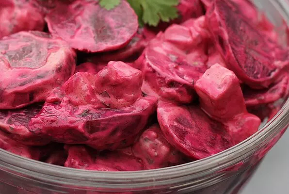

Beet summer salade

Description:
This was a quick simple recipe powered by a desire to have a delicious summer salad with what I had on hand. I also love beets!!
Ingrediant
- 1 (15 ounce) can sliced beets, drained and diced
- ¼ cup chopped watermelon
- 2 tablespoons chopped fresh cilantro
- 2 tablespoons reduced-fat sour cream
- 2 tablespoons balsamic vinegar
- 1 tablespoon olive oil
- kosher salt to taste
- ground black pepper to taste
Etape:
- Mix beets, watermelon, and cilantro together in a bowl. Whisk sour cream, balsamic vinegar, olive oil, salt, and pepper together in a small bowl; pour over beet mixture. Toss to coat. Refrigerate 30 minutes before serving.
Go back